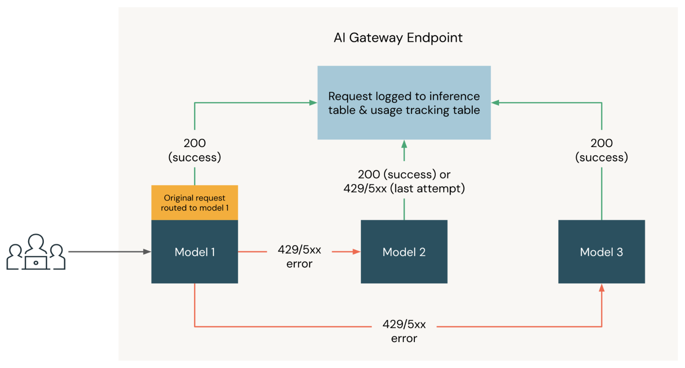

Development options
Tools, authentication, and serverless environments
LECTURE 1
14 October 2026
16:00–18:00 Amsterdam
What we will cover today
Tools, authentication, and serverless environments
Project configuration and pyproject.toml
Package resources and run notebooks as jobs
Model services and the gateway interface
Dedicated capacity and reservation options
Provider access, governance, and routing
Retrieve arXiv metadata, write a Delta table, and review an AI-assisted job configuration
Local code, with execution on Databricks
The project pins Python to 3.12.* and declares its dependencies in pyproject.toml.
The repository selects serverless environment version 5, with Databricks Connect 18.0.
project_config.yml keeps the application’s configuration alongside its code.
Check the active interpreter and python -m pip list when troubleshooting dependency differences.
The course version and the latest release can differ
| Environment | Python | DB Connect | Support until |
|---|---|---|---|
| 6 / latest | 3.12.3 | 19 | 3 Sep 2029 |
| 5 / course | 3.12.3 | 18 | 25 Feb 2029 |
| 4 | 3.12.3 | 17.3.2 | 13 Aug 2028 |
An environment version fixes a client API and package baseline. Keep local dependencies aligned with the environment your workload uses.
Environment version reference · Checked 13 October 2026
Different tools for different parts of the workflow
| Tool | What it does | In this course |
|---|---|---|
| Databricks CLI | Authenticates and automates workspace operations from a terminal. | Profiles, bundle validation, deployment, and job runs |
| Databricks Connect | Runs Spark workloads on Databricks from local Python code. | Local development and debugging with remote compute |
| VS Code extension | Connects the editor to a Databricks workspace and development workflow. | Project setup, code synchronization, and remote execution |
Browser-based OAuth login for local development
INSTALL ON macOS
brew tap databricks/tap
brew install databricksLOGIN AND CHECK PROFILES
databricks auth login \
--host <workspace-url> \
--profile course
databricks auth profilesComplete the browser sign-in, then use the same profile with your development tools.
The SDK can use configured Databricks authentication. An OpenAI client needs a compatible token or authentication adapter.
No OpenAI API key is needed to call the course’s Databricks model service.
Never paste credentials into slides, source control, or shared notebook outputs.
Declarative Automation Bundles, formerly Databricks Asset Bundles
Version application code and resource configuration together, then deploy them to a target workspace.
In this repositorydatabricks.yml defines the bundle and its deployment targets.
Other resource-management options include Terraform, the REST API, SDKs, the CLI, and MLflow APIs.
Support is broad. Ownership still matters.
Check resource support in your CLI version. Assign one deployment owner per resource to avoid conflicting updates.
Run from the bundle directory
databricks bundle validate -t devValidate the configuration
databricks bundle deploy -t devDeploy code and resources
databricks bundle run -t dev <job-key>Run a configured job
databricks bundle destroy -t devDelete the target’s deployed resources
Deployment and deletion affect real resources.Review the target and planned changes before confirming either action.
A governed model service separates application code from its backend
THE SERVICE OUR APPLICATION CALLS
course_ops.gateway.chatDatabricks serves the model from shared capacity.
A serving endpoint provides dedicated capacity.
A provider service connects to a model outside Databricks.
The model service handles routing. Its destination determines which model and capacity serve the request.
OpenAI Python client, authenticated with Databricks
import os
from openai import OpenAI
client = OpenAI(
api_key=os.environ["DATABRICKS_TOKEN"],
base_url=f"{WORKSPACE_URL.rstrip('/')}/ai-gateway/mlflow/v1",
)
response = client.responses.create(
model="course_ops.gateway.chat",
max_output_tokens=256,
input="What is Databricks?",
)
print(response.output_text)Set WORKSPACE_URL and supply DATABRICKS_TOKEN securely before running. Supported API features depend on the destination.
Governance around model requests and responses
Monitor token consumption and attribute activity to services, users, or projects.
Configure rate limits, traffic splitting, and fallback destinations.
Enable request and response logging for debugging and audit workflows.
Apply service policies to evaluate request content and model responses.
Configure and verify these features for your service. Logging and policies are not implied by using a gateway URL.
Pay-per-token access to shared model capacity
No dedicated capacity to provision. Your identity still needs access to the model service.
Dedicated capacity has more than one purchasing model
No reservation term. Change or remove capacity as needed.
Notebook 1.2 creates a GPT OSS 120B on-demand endpoint, then a model service that routes to it.
SDK/API deployment is available.
Commit for 1 or 3 months, starting at 50 model units, in increments of 50.
Eligible models are limited. Create a new reserved endpoint, then route a model service to it.
Existing endpoints cannot convert.
Active reservations cannot be canceled or their endpoints deleted. A short lab cleanup cannot undo that commitment.
Workload estimate, supported allocation, then performance testing
Example: 60 requests/min, each with 2,000 input and 300 output tokens.
120,000 input + 18,000 output tokens/min
Notebook 1.2 checks GPT OSS 120B eligibility and reads model_unit_chunk_size from the optimization API.
The lab sets CAPACITY_CHUNKS = 2, allocates 2 × chunk size, and estimates DBUs for that allocation.
Test realistic traffic against a response-time target. Measure latency and errors, then adjust capacity and retest.
Two chunks are a lab setting, not a sizing recommendation. Notebook 1.2 demonstrates deployment and inference, not load testing.
Models hosted outside Databricks, accessed through the gateway
A model provider service connects to an external API using provider credentials.
The application calls a Databricks model service with Databricks authentication.
Supported modalities, parameters, and limits depend on the chosen provider and model.
Review network access, credentials, provider charges, and enabled gateway features.
The hosting choice sits behind the model-service interface
| Consideration | Pay-per-token | Provisioned | External provider |
|---|---|---|---|
| Capacity | Shared | Dedicated | Provider-managed |
| Cost basis | Token usage | Allocated capacity or reservation | Provider pricing and applicable gateway charges |
| Setup | Model access and permissions | Endpoint provisioning and service routing | Provider connection and credentials |
| Typical use | Exploration or variable traffic | Sustained demand with capacity planning | A specific provider or model requirement |
Check eligible models and workspace availability rather than relying on a static model catalog.
The legacy endpoint feature matrix describes a different surface
| Capability | Configuration or check |
|---|---|
| Access | Unity Catalog privileges on the service and related objects |
| Routing | Model-service destinations, traffic weights, and fallbacks |
| Observability | Usage records and configured inference logging |
| Guardrails | Attached service policies and preview availability |
| Model features | Provider, destination model, API, and regional support |
Unity Gateway documentation · Verify the actual service configuration during the demo.
Backup destinations handle failed primary requests

Traffic weights choose the initial destination.
Failures can trigger retries against an ordered fallback list.
Verify behavior in usage records and test each backup model.
Conceptual diagram from the original lecture. In Unity Gateway, configure fallback order on the model service.
Service policies govern request and response content
Evaluate content for PII and apply the configured allow or deny decision.
Use supported policies to check content risks, including prompt injection.
Attach custom policies for requirements such as eligible project tags.
Policies can evaluate the request before invocation and the response afterward.
Service policies are Beta. Automated checks do not guarantee detection of every harmful or sensitive input.
Apply today’s workflow to your own project
Use the arXiv ingestion notebook as a reference. Keep credentials out of your pull request.
Development, model access, or your project
Continue the conversation on Discord.